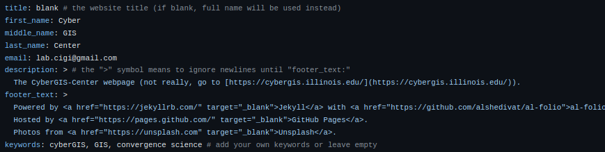
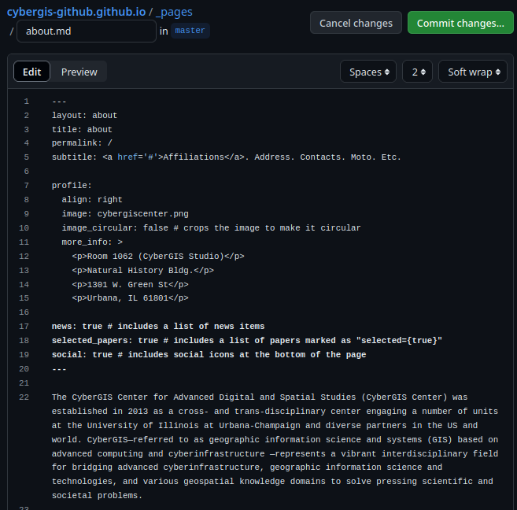

Basic Customization
While we have deployed a webpage, it is definitely not your webpage yet. The next few steps will walk through some basic changes to help make the webpage your own.
Updating _config.yml (again)
Back on the GitHub repository page, we will edit the _config.yml file once more.
In the editor, let's make the following changes:
- Change
first_name,middle_name(leave blank if desired), andlast_nameto your names. - Change
emailto your email - Edit the
descriptionas appropriate. - Change
keywords. 
Scroll down the file to the "Social Integration" section (lines 74+ at time of writing). Here, we can enter in social media accounts (GitHub, Google Scholar, ACM, LinkedIn, ORCID) you would like to link with your account.
Feel free to change anything else you might see that interests you. When you are done, commit the changes.
Note
These changes will not be reflected on your webpage immediately, the actions need to run. You may also need to clear any browser cache to see the changes when they have been deployed.
Add a Profile Pic
Images on the webpage are in the assets/img folder of the repository. Navigate to this folder and click "Add file"/"Upload file" in the top-right.
Upload a file and make note of the image file name including the file extension (mine is "cybergiscenter.png").
Updating the About Page
The main pages for your site are in the _pages folder of your repository, with the about.md page being the landing page for your site. Navigate to this page and edit it.
A few things to edit:
- Change the
subtitleas you see fit. - Change
imageto your profile image from the previous step (e.g. "cybergiscenter.png"). - Change
more_infoto whatever you want (e.g. your office address, leave it blank). - Change the bio paragraphs to something more fitting.

When you are done editing, commit your changes. Remember that you need the actions to build and may need to update your cache to view the changes.
Adding Papers
You can easily add your own papers to your website using BibTeX files. The bibiographies are automatically generated using these files and sorted in _bibliography/papers.bib.
Navigate to this page and edit it. We will select the contents of the file and delete them. Then replace them with the following BibTeX entries (or your own!). Once you have made this change, commit the changes.
I recommend using Zotero with the Better BibTeX for Zotero plugin for working with BibTeX. BibTeX is also used for writing documents in LaTeX (e.g. Overleaf) so it is a useful tool!
Many journals also have an option to export the BibTeX citation.
Delete a Page
You can remove and add pages to the _pages folder. For example, you can go to _pages/profiles.md and use the "..." menu to "Delete file".
This page is useful for labs/groups with multiple peope, but is not designed for personal webpages (although you can keep it if you want).
For more in-depth information on Customization, see the instructions on the al-folio repo.